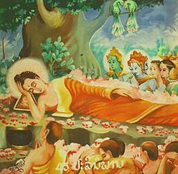

| No Teistas |
| Inicio | Religiones Monoteistas | Religiones Politeistas | Religiones Panteistas | No Teistas | Cristianismo | Islam | Hinduismo | Religion China | Budismo |
El no teísmo
El no teísmo es una definición que se refiere a las corrientes espirituales o filosóficas que no discurren o mencionan la creencia en un Dios creador o absoluto. Se diferencia del ateísmo en que los no teístas pueden aceptar conceptos espirituales como la creencia en entidades superiores o espíritus, aunque estos son vistos generalmente como seres no absolutos que evolucionan y cambian. El filósofo Anthony Kenny distingue a los agnósticos, que encuentran la premisa «Dios existe» desconocida, de los no cognotivistas (los no teístas).
Algunos sistemas de creencias no teístas son el budismo, el jainismo, el taoísmo y el confucianismo. Aunque el budismo tiene un vasto número de escrituras y prácticas, el núcleo del budismo, las Cuatro nobles verdades y el Noble camino óctuple, son distinguidas en el mundo por no tener mención alguna de dioses o alguna noción de veneración deidades. Son puramente éticas meditativas y directrices basadas en las verdades del sufrimiento psicológico debido a la impermanencia.
Algunos pensadores tienden a calificar a la enseñanza budista como agnóstica por presuntamente "no negar ni aceptar la existencia de un Dios creador", ciertamente diferentes textos budistas dejan implícito que Gautama Buda negaba la existencia de un Dios creador, por lo que el budismo no podría ser considerado agnóstico. Ejemplo de esta negación de una divinidad creadora puede verse en el sutra Brahmajala-sutra.
Algo similar se establece en el jainismo, religión muy cercana al budismo, que de modo análogo niega expresamente la creencia en un dios creador.
Si bien el budismo y el jainismo son consideradas religiones no teístas, estas sí aceptan la creencia en realidades espirituales, como el renacimiento, los milagros y el karma, y en la existencia de seres espirituales, como espíritus y deidades, por lo cual no pueden considerarse ateístas (al aceptar, por ejemplo, la existencia de dioses, aunque no vistos como creadores) ni agnósticas (al aceptar como cierta la creencia en conceptos espirituales como el karma). En general budistas y jainistas no rinden culto a los dioses que son vistos como de naturaleza permanente. Sus deidades son seres iluminados que han alcanzado la Iluminación, como los Tirthankar y los Budas,5 su trato a estos difiere mucho del concepto tradicional occidental de deidad..
